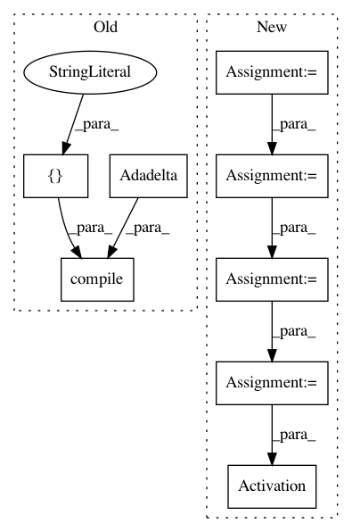

0a80b9769115d291f15c244429793eda4cb8ecad,tests/test_layer_transformer.py,,test_conv_to_wider_layer,#,60
Before Change
activation="relu",
padding="same")
model = Sequential([a, b])
model.compile(loss=categorical_crossentropy,
optimizer=Adadelta(),
metrics=["accuracy"])
a2, b2 = conv_to_wider_layer(a, b, 5)
model2 = Sequential([a2, b2])
model2.compile(loss=categorical_crossentropy,
optimizer=Adadelta(),
After Change
def test_conv_to_wider_layer():
model = get_conv_model()
conv1 = model.layers[1]
conv2 = model.layers[4]
bn1 = model.layers[2]
new_conv1, [new_conv2], [new_bn1] = conv_to_wider_layer(conv1, [conv2], [bn1], 3)
new_input = Input(shape=get_int_tuple(model.inputs[0].shape[1:]))
temp_tensor = new_conv1(new_input)
temp_tensor = new_bn1(temp_tensor)
temp_tensor = Activation("relu")(temp_tensor)
temp_tensor = new_conv2(temp_tensor)
temp_tensor = copy_layer(model.layers[5])(temp_tensor)
temp_tensor = Activation("relu")(temp_tensor)
model2 = Model(inputs=new_input, outputs=temp_tensor)
random_input = get_conv_data()
output1 = model.predict_on_batch(random_input)
In pattern: SUPERPATTERN
Frequency: 4
Non-data size: 8
Instances
Project Name: keras-team/autokeras
Commit Name: 0a80b9769115d291f15c244429793eda4cb8ecad
Time: 2017-12-28
Author: jhfjhfj1@gmail.com
File Name: tests/test_layer_transformer.py
Class Name:
Method Name: test_conv_to_wider_layer
Project Name: keras-team/autokeras
Commit Name: 9a387157f03916b2f4f9f63647792dca39942471
Time: 2018-03-29
Author: jin@tamu.edu
File Name: autokeras/generator.py
Class Name: DefaultClassifierGenerator
Method Name: generate